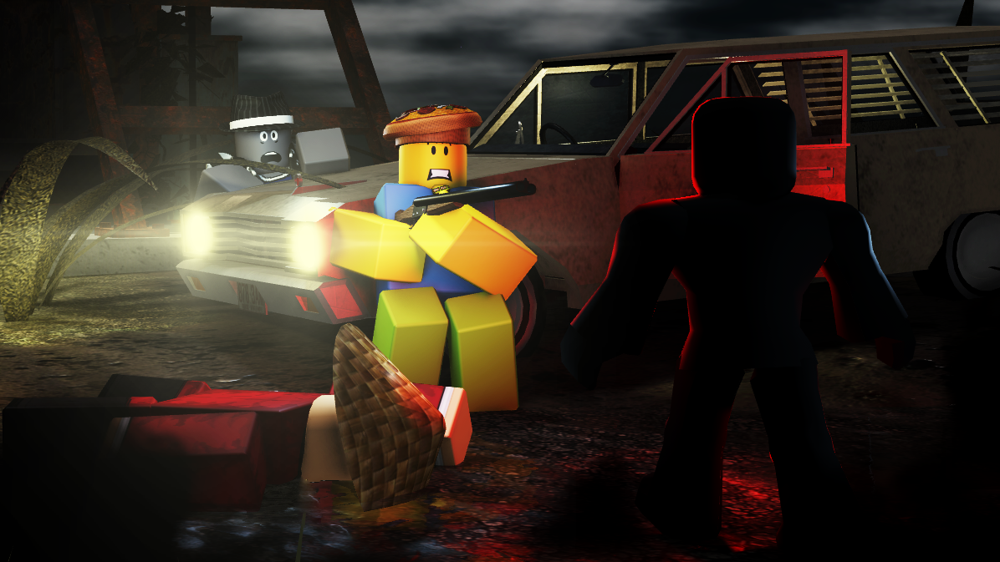

After 3 AM is a co-op survival horror game with stealth elements. This game is a direct sequel to Before 3 AM.
After reports of Shadow Man's return and the countless numbers of murders in your area, your goal has become quite clear. Escape town and make it out alive.

The game takes place in a small part of a town called 'Myrtle Grove', which you find that the usual exit through a tunnel has been collapsed, meaning you and your crew must find a new way to escape.
Along your journey, you'll quickly find an old abandoned car stored away, which can fit up to 4 people.
A perfect utility and getaway vehicle which you must get going and then maintain in order to make it out alive as quickly as possible